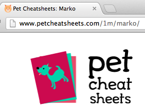

Backstory: On Saturday, November 17, 2012 Audrey Roy and I decided to participate in the Petcentric hackathon, a Los Angeles area Pet-themed product/coding contest held at Amplify. We arrived a bit late, but armed with Audrey's idea of creating a pet based reference sheet for owners, pet sitters, vets, and anyone else needing a card with data on pets, we got to work. About eight hours later we toggled a DNS switch and petcheatsheets.com was live.
Update: Pet Cheatsheet's owner's pet information is private, because it includes emergency contact information that often includes phone numbers, email addresses, and even physical addresses of family members and friends. So that was also a consideration in implementation
URL Design Thoughts
During development, one of the things I considered carefully was URL design of the primary feature, which was pets. The obvious choice was to go with a design that identified owners with pets:
/<owner_username>/<pet_name>/
However, upon reflection, this didn't sit well with me. What if a pet changed owners? Identifying a pet with a particular owner in the URL meant that if we ever added a 'transfer ownership' feature, there would be extra work. Also, if we ever implemented a sharing feature, changing URLs on a pet going to the same veterinarian their whole life might make the veterinarian's list of pets and their URLs invalid.
With that in mind, I decided to go with an identifier and pet name, where the pet name was actually not used in the lookup:
/<pet_id>/<pet_name:not_required>/
One more thing, rather than just use the pet table's primary key as <pet_id> I decided to go with base36 (0-9 and a-z) encoding. It's not unlike what URL shortening services do, and if we gained any traction, it makes recitation of a pet's URL easier. So the final result was actually:
/<pet_id:base_36_encoded>/<pet_name:not_required>/
Implementation
Here's a simplified view of the final implementation, starting with the model:
# pets/models.py
from django.db import models
from django.utils.translation import ugettext_lazy as _
class Pet(models.Model):
name = models.CharField(_("Pet's name"), max_length=100)
identifier = models.CharField(_("identifier"), max_length=50,
null=True, blank=True, db_index=True)
# More fields...
Then the form:
# pets/forms.py
from django import forms
from pets.models import Pet
class PetForm(forms.ModelForm):
class Meta:
model = Pet
fields = ('name', ) # more fields
With model and form, we build the views:
# pets/views.py
from django.shortcuts import get_object_or_404
from django.views.generic import CreateView, DetailView, UpdateView
from braces.views import LoginRequiredMixin
from pets.forms import PetForm
class PetCreateView(LoginRequiredMixin, CreateView):
model = Pet
form_class = PetForm
def form_valid(self, form):
pet = form.save()
pet.identifier = base36.encode(pet.pk)
pet.owner = self.request.user
# Save again - it's not taking THAT many server cycles AND we needed
# the pet.pk in advance to generate the pet.identifier
pet.save()
return super(PetCreateView, self).form_valid(form)
class GetPetMixin(object):
""" Any view that needs to get a Pet object can use this Mixin
Pet Cheatsheet's owner's pet information is private, because it
includes emergency contact information that often includes phone
numbers, email addresses, and even physical addresses of family
members and friends.
"""
def get_object(self):
pet = get_object_or_404(Pet, identifier=self.kwargs['identifier'])
if pet.owner != self.request.user:
# Rather than a 'forbidden' result, we want to show a 'Pet Not
# Found' page so we can educate site users.
raise Http404
return pet
class PetDetailView(LoginRequiredMixin, GetPetMixin, DetailView):
pass
class PetUpdateView(LoginRequiredMixin, GetPetMixin, UpdateView):
model = Pet
form_class = PetForm
class PetPDFView(LoginRequiredMixin, GetPetMixin, DetailView):
model = Pet
# snip: lots of code for rendering the PDFs.
Then we wire up the views into the urls:
from django.conf.urls.defaults import patterns, url
from pets import views
urlpatterns = patterns("",
url(
regex=r"^build-cheatsheet/$",
view=views.PetCreateView.as_view(),
name="pet_create",
),
url(
regex=r"^update/(?P<identifier>[\w\d]+)/(?P<slug>[\w\d\-\_]+)/$",
view=views.PetUpdateView.as_view(),
name="pet_update",
),
url(
regex=r"^(?P<identifier>[\w\d]+)/(?P<slug>[\w\d\-\_]+)/$",
view=views.PetDetailView.as_view(),
name="pet_detail",
),
# snip: a lot of other views
)
Result
In the image below you can see how Marko's URL has his own unique identifier, along with his name. I can change the name in the URL or even in the database, but so long as I don't modify the identifying part of the URL (1m), his information always shows up.

Comments !